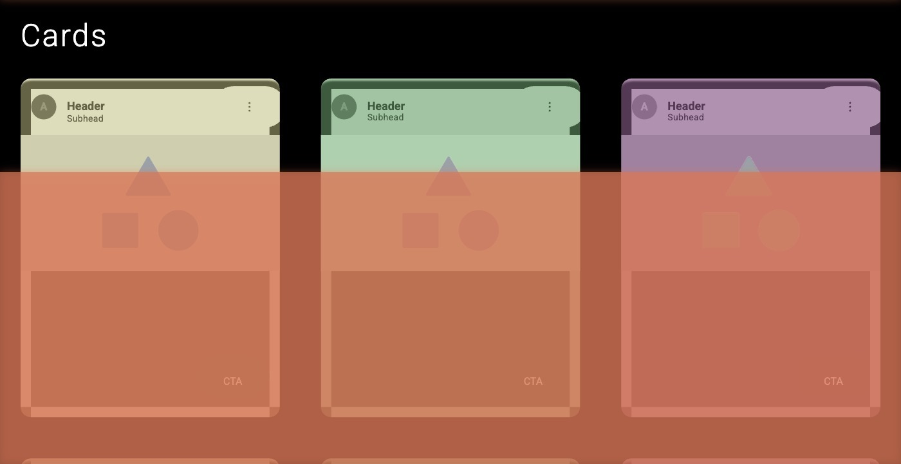
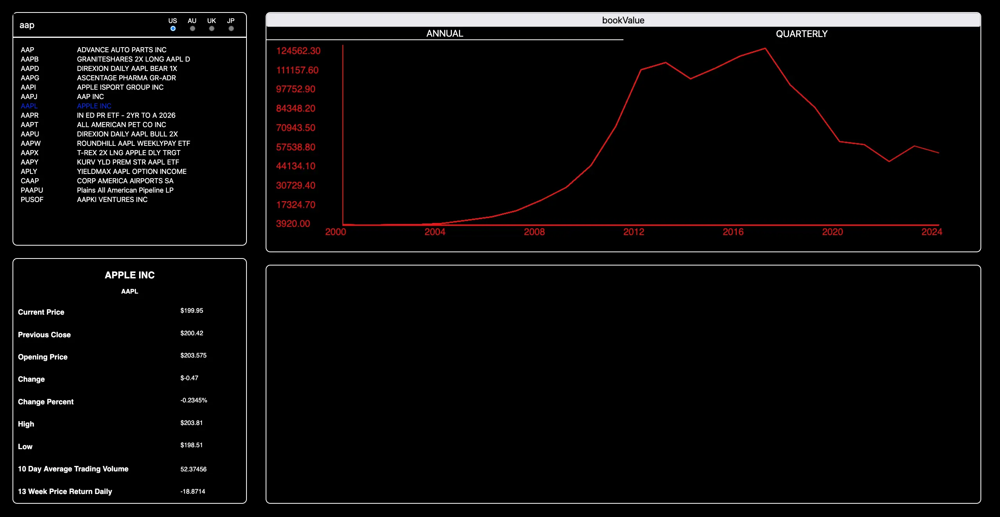
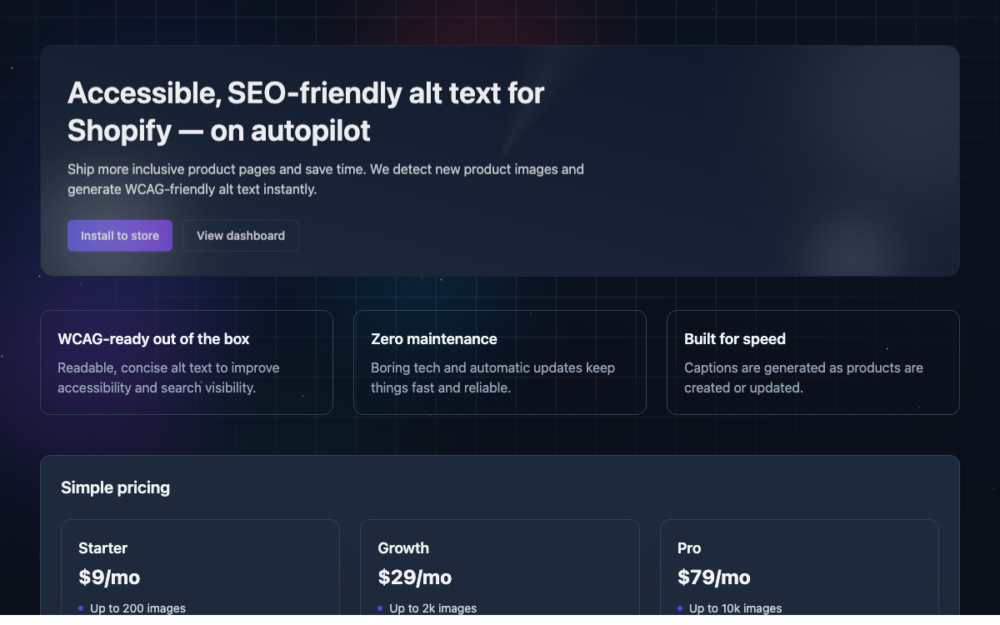
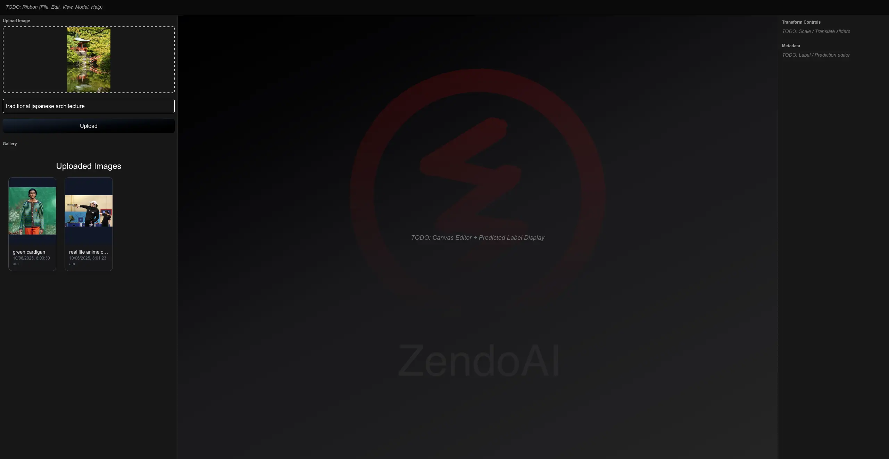
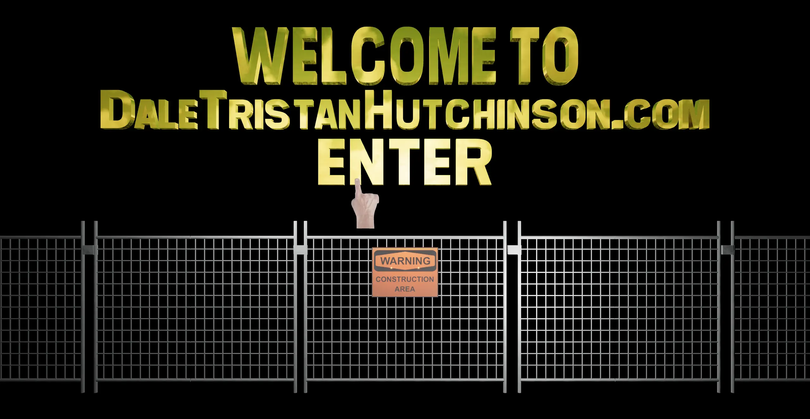
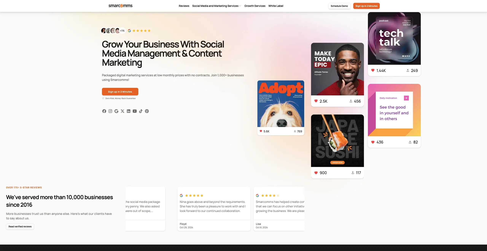
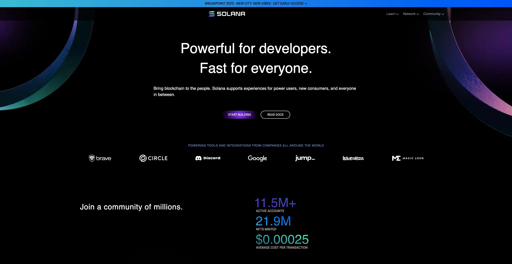

Dale Hutchinson
> Rust Developer
daletristanhutchinson.com
> Rust Developer
daletristanhutchinson.com
Building full-stack web apps, CLI tools, compilers, and audio systems in Rust. A new version of this site is under construction — here are some current and in-progress projects.
Full-stack data platform aggregating economic, environmental, and social indicators from the ABS, RBA, and independent research institutions. GraphQL API with a Leptos/WebAssembly frontend.
Read moreA command-line utility that recursively calculates the total size of a directory, with optional .gitignore support to exclude build artefacts and ignored files.
Read moreA Rust proc macro that takes a context-free grammar as input and parses it into production rule data structures at compile time — the foundation for generating language-specific scanners, parsers, and code generators.
Read more
A Leptos component showcase styled with Tailwind CSS and based on Material Design. Includes a custom HCT colour space algorithm: given an RGB input it produces tonal variants (lighter/darker) while preserving hue, implemented using nalgebra.
Read moreAn experimental multi-threaded algorithmic composition engine. Independent composer threads emit NoteOn/NoteOff messages over MPSC channels to a central synthesis engine that renders audio in real time via the system audio device.
Read more
A Rust single-page app for stock quote search and interactive charting, compiled to WebAssembly and running entirely in the browser. Built with Dioxus.
Read more
AI-powered service that generates descriptive, accessibility-ready alt text for images. Intended as a Shopify app for merchants, with a web UI and an API for batch workflows.
Read more
Full-stack platform for training and generating images with custom ML models. Built with Rust, FastAPI, and Next.js. Not deployed live due to infrastructure costs.
Read more
An experimental portfolio site demonstrating 3D UI concepts using React Three Fiber and WebGL — interactive 3D scenes rendered directly in the browser.
Read more
Responsive marketing site built from a Figma design spec, using Next.js and Tailwind CSS.
Read more
High-fidelity implementation of the Solana.com landing page using Tailwind CSS, GSAP animations, and Next.js.
Read more